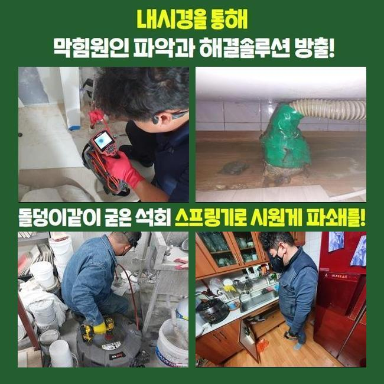
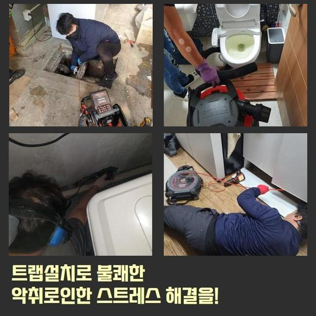
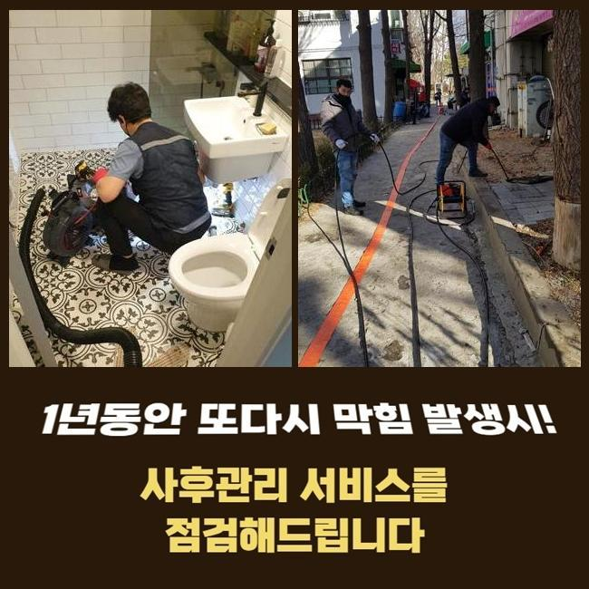
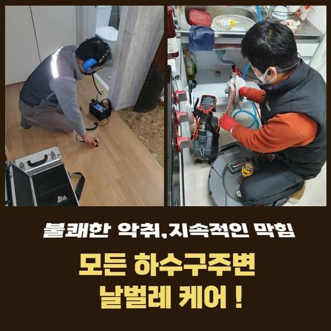
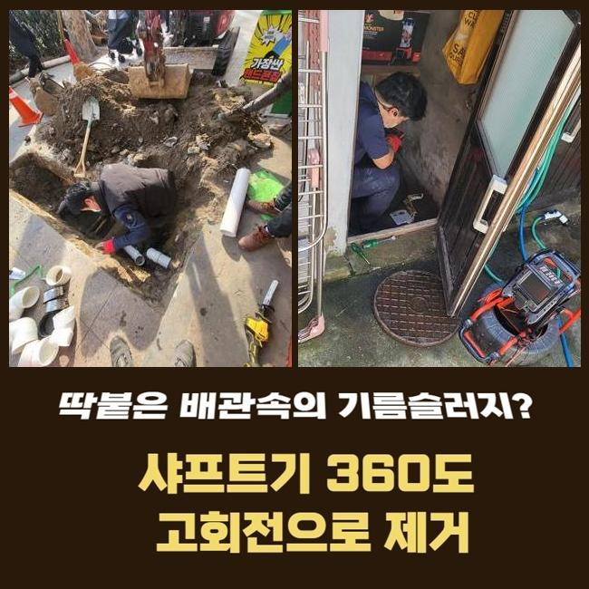
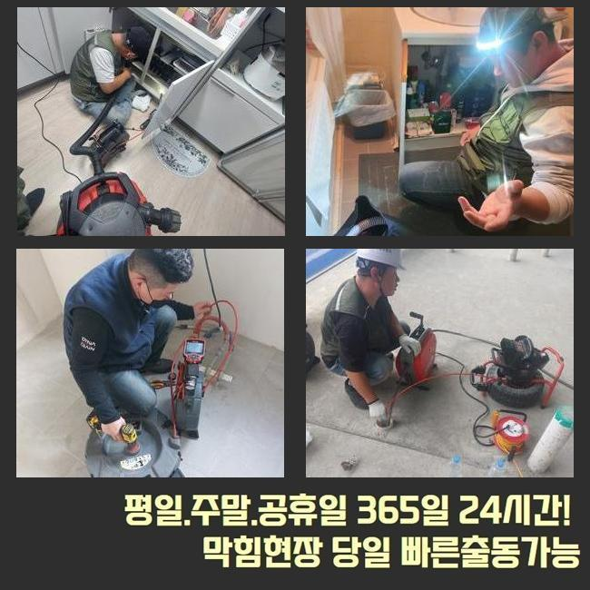
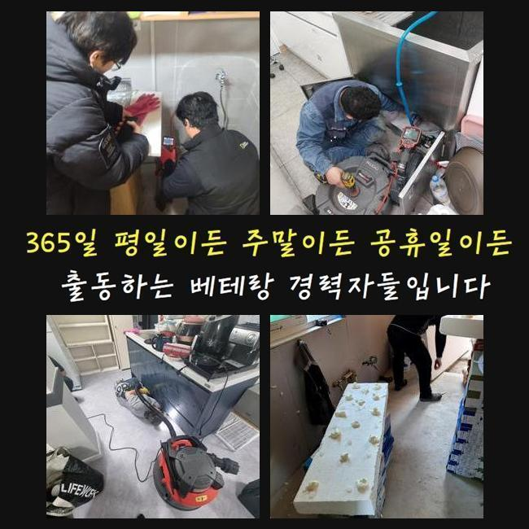

🏠 천안 대흥동대변기역류 일봉동 배수구뚫기 누수탐지공사
천안 대흥동 싱크대막힘 전문 시공 후기

📋 작업 개요
- 위치: 천안 대흥동, 대흥동, 천안
- 서비스 유형: 싱크대막힘, 변기막힘, 하수구막힘, 배관막힘, 누수수리, 역류해결, 뚫는업체, 배관청소, 설비공사
- 작업 일시: 2025. 6. 12. 2:05
- 업체명: 하수구수사대 (010-5615-2118)
🔍 문제 상황
집안의 주방에서 음식을 만든 후에 남은 잔여물을 깔끔해지도록 폐기하지 않거나 설거지하는 과정에서 기름기가 유입되는 일은 흔합니다
이렇게 되면 싱크대가 막히기 쉬운데 이걸 뚫는 방법에는 차이가 있으며 간단한 상황이면 석션으로 흡입해서 처리가 끝나기도 합니다
흡입해서 해결하기가 어려울 정도로 안쪽까지 오염이 생겨서 석회질로 변한 상태이거나 슬러지의 양이 많다면 다른 방법을 찾아야합니다
여러 장비들을 동원해서 배관 청소랑 정비를 진행해야 하는데 적절한 도구를 결정하는 게 필요합니다
천안 대흥동대변기역류 일봉동 배수구뚫기 누수탐지공사
하수구가 막히면 아래에서 냄새가 그대로 올라오기 때문에 집 안임에도 악취 문제가 생길 수 계신데요
이번에 배관 막힘을 해결하기 위해 출장을 갔던 세대도 냄새가 지독하게 나서 빠른 방문을 원하셨어요
하수가 위쪽까지 고인 상태에서는 어떤 대응도 어렵기에 석션기를 투입해서 배수구에 고여 있는 하수의 분량부터 흡입해드리며 자잘한 찌꺼기도 함께 제거하였습니다
입구 쪽만 일시적으로 막혔을 때와 안쪽까지 오염이 누적됐을 때의 사용 장비에는 아주 분명한 차이점이 존재합니다

🔎 원인 분석
💡 전문가 진단: 정밀 진단 장비를 사용하여 슬러지의 고착 여부를 판명하고 타격/세척 작업을 실시했습니다.
석션기 작업해도 뚫리지 않는다면 내부까지 세밀하게 살펴본 이후에 어떤 수단을 활용할지 결정해 주어야 해요
더욱 깊은 내부 상태를 점검하기 위해 필요한 장비는 배관 내시경 카메라가 될 수 있겠습니다
깊숙한 지점까지 투입이 가능하며 화면을 보면 오염이 어느 구간에 집중됐는지 다 볼 수 있습니다
싱크대의 문제를 처리하기 위해 체크해 본 결과 안에는 기름 슬러지가 가득한 모습이 보였네요
하수구 내시경 앞쪽에 있는 조명이 기름때에 반사된 바람에 빨갛게 보이는데 이 부분이 모두 제거할 구간이에요
음식을 먹은 후에 그릇에 묻은 각종 양념이나 국물 등에서 나온 기름기가 물이 나가는 통로를 방해하는 원인이 됩니다
물 막힘 현상을 해소하려면 덩어리가 큰 이물질부터 제거해서 물이 지나갈 공간을 확보해야 원활하게 처리할 수 있답니다
단단하게 뭉친 그런 상태이므로 분쇄하기 위해서는 이 도구를 주로 써요
강한 출력과 날카로운 헤드로 석회질 덩어리를 부수기에 용이한 플렉스 샤프트기를 사용해 주는 것이 효과적이에요
이런 샤프트는 전동 드릴에 연결해서 회전하는 힘을 원동력으로 배관의 벽에 붙은 유막을 부숴주는데요

🔧 작업 과정
끝에는 쇠사슬이 결합해 있어서 이 부분이 돌아가면서 끈적거리는 이물질도 조각을 내주기 때문에 밖으로 배출하기가 한결 수월해져요
비용 경우는 작업 난이도와 현장 상황을 고려하여 책정해 드리기 때문에 동일한 평형대의 아파트 단지라도 다를 수 있어요
오랫동안 배수관 청소를 하지 않고 지속해서 음식물 조각이 유입된다면 오염도가 더욱 심해져 버릴텐데요
심할 경우라면 전체 배관 청소 작업이 필요하므로 단순한 석션기 작업보다는 높은 지출이 유발될 수 있어요
게다가 기름 슬러지가 응고된 상태로 덩어리가 커지면서 무게를 못 버티고 하수관의 연결 부위가 벌어지면 누수 피해가 생길 수도 있습니다
아래층으로 물샘이 발생하게 되면 악취도 나고 벽지도 젖어버려서 위층에서 보상을 해야 되는 경우도 심심치 않게 나온답니다
크기가 큰 덩어리는 석션기로는 흡입할 수 없으므로 자잘하게 쪼갠 뒤에 밖으로 배출하는 것이 바람직한데요
또한 분쇄한 기름때를 하수구 내에 그대로 방치하면 건조한 후에 굳어 버려서 2차 막힘을 유발해요
분쇄하기 위한 플렉스 샤프트기와 바로 알갱이를 흡입할 석션기 그리고 내시경 카메라가 필수적으로 필요한데요
유막이 없는 부위에 샤프트 기를 작동하여 회전하면 파이프에 균열 등을 유발할 수도 있어서 덩어리가 크게 자리 잡은 곳에 집중해주고서 이용해야하는데요
뚫는 작업 도중에 파손이 일어나지 않게끔 꼭 내시경 화면으로 중간의 상태를 점검해 주며 배관 청소와 뚫기 시공을 진행해 줘야 됩니다
새빨갛게 보이는 유막이 여러 군데에 분포돼 있었으나 계속해서 배관 청소를 진행한 결과 이제는 깔끔하게 변했는데요
화면상에는 더 이상 오염이 눈에 보이지 않아서 주름관 호스를 원래 있던 대로 싱크대 아래의 하수관에 투입하여 연결해 주고 마무리로 개수대에서 통수 검사해 보았어요
청소가 잘 끝난 덕에 이제는 시원하게 쭉 빠지는 걸 한눈에 알아차릴 수 있었는데요
하수구에서 제거한 기름 덩어리 하수는 변기에 내려주고 알갱이는 악취가 날 수 있으니 봉지에 밀봉한 뒤에 쓰레기통에 폐기해 드렸어요


✅ 작업 완료
이렇게 기름때가 누적되어 막힌 곳을 어떻게 처리하는지 보여드렸어요
배관을 뚫어내는 비용이 걱정되시는 분들이라면 평상시 관리를 신경써서 해주시면 좋은데요
뜨거운 물을 간혹 부어주시고 평상시 청소를 잘 해주시면 됩니다
아예 막혀버린 상황 속에서는 스스로 처리하는 것만으로는 극복하기 힘드니 저희에게 문의를 걸어주시면 되겠습니다




⚠️ 베란다 누수 및 방수 관리 방법
- ✅ 비가 많이 올 때 창틀 주변이나 아래층 천장에 얼룩이 생기는지 정기적으로 확인해 보세요.
- ✅ 우수관 주변 실리콘 마감이 들뜨거나 깨진 틈새가 있는지 손상 여부를 수시로 체크하세요.
- ✅ 베란다 바닥 타일의 줄눈(메지)이 소실되면 그 틈으로 물이 침투하여 누수가 유발됩니다.
- ✅ 누수 의심 증상 발견 시 방치하면 아래층 손실이 커지므로 즉시 전문가의 진단을 받으십시오.
💡 핵심 정리
- 확실한 장비 작업(내시경 점검 및 샤프트 스케일링)으로 원인을 뿌리 뽑습니다.
- 작업 후 1년 이내에 동일한 부위 재발 시 100% 무상 A/S 서비스를 보장합니다.
- 서울 · 경기 · 인천 전 지역에 24시간 언제든 긴급 출동할 수 있도록 항시 대기 중입니다.
❓ 자주 묻는 질문 (FAQ)
🚨 천안 대흥동 싱크대막힘 문제로 고민이신가요?
정확한 원인 진단과 확실한 시공으로 재발 없는 해결을 약속드립니다.
24시간 긴급 출동 | 서울 · 경기 · 인천 전지역 | 1년 내 재발 시 무상 A/S